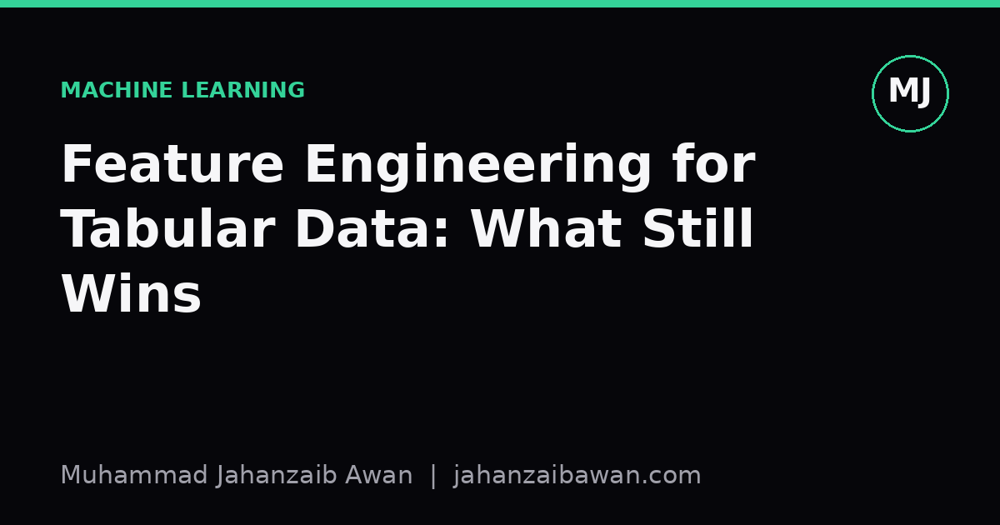

Feature Engineering for Tabular Data: What Still Wins
Before you reach for a deep model, ask whether a well-built feature can do the job more cheaply and more honestly.

The quiet advantage of a good feature
Every time a new architecture makes headlines, someone asks whether it will finally make feature engineering obsolete for tabular problems. In my experience it rarely does. Images and text have strong local structure that convolutions and attention can exploit directly from raw pixels or tokens. Tabular data usually does not have that structure. A column called days_since_last_purchase and a column called account_balance have no spatial or sequential relationship to each other unless you build one. A neural network has to discover useful interactions from scratch, with limited data and no inductive bias to guide it. A human who understands the domain can often just write the interaction down.
This is why gradient-boosted trees paired with careful feature construction remain such strong baselines on structured, row-and-column data. Trees are good at finding splits and interactions on their own, but they still benefit enormously from features that encode domain knowledge the raw columns do not expose. The real competition is not really network versus tree. It is implicit representation learning versus explicit, human-guided representation learning. On tabular data with modest sample sizes, explicit usually wins, because there simply is not enough data for a network to rediscover what a domain expert already knows.
A worked example: ratios beat raw numbers
Suppose you are predicting whether a customer will cancel a subscription next month, and your raw features include total_logins_last_30_days and account_age_days. A neural network fed both raw columns has to learn, through many layers and many examples, that what matters is not the login count in isolation but the login count relative to how long the account has existed. A brand new user with five logins in thirty days is engaged. A three-year veteran with five logins in thirty days is probably drifting away.
If you instead engineer a feature such as logins_per_day_since_signup, you have handed the model the ratio directly. In a plausible scenario, a logistic regression or a shallow tree ensemble using that single engineered ratio might separate churners from non-churners with an AUC around 0.71, where the same model using only the two raw columns manages something closer to 0.63. The network fed raw columns might eventually close some of that gap with enough data and enough capacity, but on a dataset of, say, twenty thousand customers, it typically will not fully catch up, because it has to spend its limited statistical budget learning the division operation instead of learning the actual churn signal.
The same logic applies to differences, not just ratios. A feature like balance_change_last_7_days captures momentum that current_balance alone cannot. Time-based aggregates, counts over rolling windows, and rate-of-change features are some of the highest-leverage engineering moves precisely because they encode a relationship the model would otherwise have to infer indirectly from many correlated examples.

Encoding categories without leaking the answer
Categorical variables are where feature engineering earns its keep and also where it most easily goes wrong. Take a feature like merchant_category with several hundred distinct values. One-hot encoding blows up the dimensionality and dilutes the signal across sparse columns. Target encoding, replacing each category with the mean of the target for that category, is far more compact and often more predictive. But target encoding computed naively, using the full dataset before splitting into train and test, leaks the label into the feature. The model then appears to perform brilliantly in validation and disappoints badly once deployed, because in production you will never have future outcomes available to encode a category at prediction time.
The fix is to compute target encodings only on training folds, ideally with cross-fold or out-of-fold schemes so that no row's encoding was influenced by its own label. This sounds like a small implementation detail, but it is the difference between a genuinely useful feature and a number that quietly reports the answer. I have seen validation AUCs sit above 0.90 on leaky target-encoded features that collapsed to something far more modest, close to what a well-tuned baseline achieves, once the encoding was done properly with held-out folds. That gap is not a modelling failure. It is an evaluation failure, and it is exactly the kind of thing that convinces people a fancy technique works when the technique was never actually tested honestly.
Where this leaves you in practice
None of this is an argument against neural networks for tabular data. There are genuine cases, particularly with very large datasets, high-cardinality categorical structure, or multimodal inputs mixing text and numbers, where learned embeddings do useful work that manual features cannot easily replicate. The argument is narrower: for moderate-sized, well-understood tabular problems, the fastest and most reliable path to a strong model is usually a solid baseline, careful ratio and interval features, properly leakage-checked categorical encodings, and a gradient-boosted tree ensemble, before reaching for anything deeper.
The practical habit worth building is to always compare a simple model with well-engineered features against your fancier candidate on an identical, leakage-aware split, using the same evaluation protocol for both. If the neural network cannot beat that baseline by a meaningful margin on held-out data that respects the real-world timeline of the problem, the added complexity is not paying for itself. Feature engineering is not a relic from before deep learning. On tabular data, it is often still the cheapest and most trustworthy way to tell your model what actually matters.